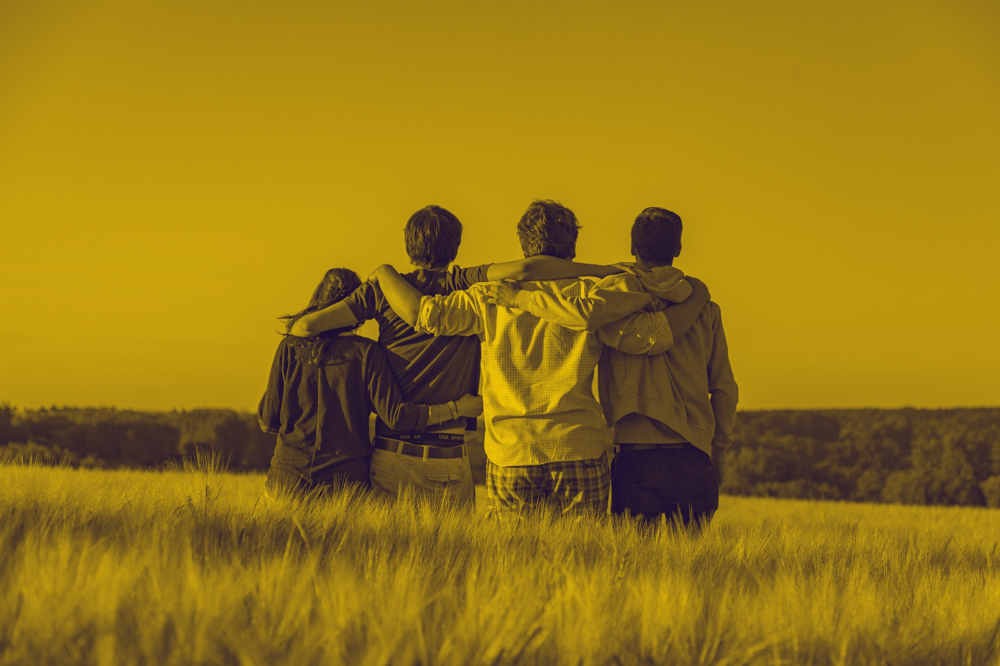

Setembro Amarelo
Mês de Prevenção contra o Suicído
Desde 2014, a Associação Brasileira de Psiquiatria – ABP, em parceria com o Conselho Federal de Medicina – CFM, organiza nacionalmente o Setembro Amarelo®.
O dia 10 deste mês é, oficialmente, o Dia Mundial de Prevenção ao Suicídio, mas a campanha acontece durante todo o ano.
São registrados mais de 13 mil suicídios todos os anos no Brasil e mais de 01 milhão no mundo.
Trata-se de uma triste realidade, que registra cada vez mais casos, principalmente entre os jovens.
Cerca de 96,8% dos casos de suicídio estavam relacionados a transtornos mentais. Em primeiro lugar está a depressão, seguida do transtorno bipolar e abuso de substâncias.

Com o objetivo de prevenir e reduzir estes números a campanha Setembro Amarelo® cresceu e hoje conquistamos o Brasil inteiro.
Para isso, o apoio das nossas federadas, núcleos, associados e de toda a sociedade é fundamental.
Como resultado de muito esforço, em 2016, garantimos espaços inéditos na imprensa e firmamos muitas parcerias.
Conseguimos também iluminar monumentos históricos, pontos turísticos, pela primeira vez o Cristo Redentor, espaços públicos e privados no Brasil inteiro.
Centenas de pessoas participaram de caminhadas e ações para a conscientização sobre este importante tema.

Diretrizes de divulgação
Em 2017, a ABP e o CFM criaram as Diretrizes para Participação e Divulgação do Setembro Amarelo®.
O documento serve para orientar toda a sociedade sobre a participação na Campanha,
como utilizar corretamente os materiais de utilidade pública produzidos e
de que maneira incentivar o Setembro Amarelo em cada região.
As Diretrizes destinam-se a pessoas físicas, empresas e demais parceiros que queiram atuar junto à ABP
e ao CFM na diminuição do estigma e, consequentemente, na prevenção ao suicídio.
Acesse abaixo e saiba como participar da Campanha Setembro Amarelo.

Baixe o PDF com as regras para divulgar a campanha do Setembro Amarelo®!